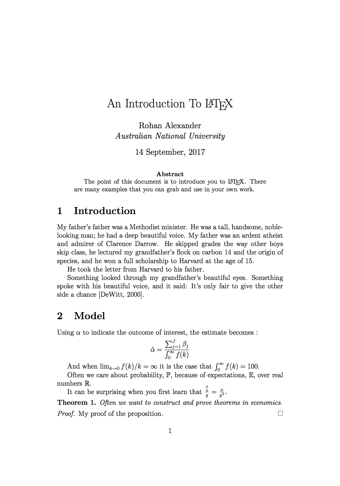

LaTeX makes it easier to produce papers that look great, but it can be overwhelming at the start. These notes help you get up-and-running with LaTeX.
Thank you to Janet Bradly and Maria Racionero for their support of this workshop. These notes are based on ones prepared by Zac Cranko and I for a presentation in 2015 and those that I put together for a 2016 presentation. Zac’s work is used with permission.
LaTeX makes it easier to produce papers that look great, but it can be overwhelming at the start. These notes help you get up-and-running with LaTeX.
By the end you will have created an example paper and slides that include a title, author, affiliation, abstract, sections, tables, figures and references that looks like this:

It is best to type everything out yourself, but you can download the tex file from here: https://github.com/RohanAlexander/blogdown_website/blob/master/static/img/paper.tex
You can treat LaTeX as a markup language. You mark your text with commands depending on how you want it to look, and then compile it to produce an output such as a PDF. Get started by downloading LaTeX, for free, from: https://www.latex-project.org/get/.
Use the default settings. You will likely end up installing a bunch of programs. (There is now a smaller version of MacTeX available, but for now it is probably best to stick with the original version for now.)
Let’s make a document. Open ‘TeXShop’ if you’re using a Mac, and ‘TeXStudio’ if you’re using a PC.
In TeXShop/TeXStudio type:
Then click ‘Typeset’. A bunch of miscellaneous files are produced in the process of compiling. Don’t worry about these – all they do is make your directory ugly. The two important files are the tex file, which contains your markup, and the pdf file, which contains your output.
Square brackets are optional in LaTeX, but it is worth specifying the paper size and the font for the documentclass command. If you wanted to specify A4 paper and 12pt text by default then our ‘Hello world!’ becomes:
The type of document that you want goes in the braces. We used ‘article’, which is good for producing papers. There are many classes of document, including ‘book’, ‘letter’, and ‘beamer’ which is for presentations, but ‘article’ is probably the one that you will most commonly use.
Packages expand the basics of LaTeX. There are a few that you should load every time because they’re often used when writing economics papers:
Load these packages by adding the following after documentclass[a4paper, 12pt]{article}, but before begin document:
Then click ‘Typeset’. Nothing should change in the output, we are just typesetting it to make sure that we have not introduced an error. The first three packages help when writing maths. The fourth helps with including graphs.
Everything before begin document is called the preamble, and everything after it is called the content.
You can add a title, author and affiliation to your paper by adding the following to the content:
Click ‘Typeset’ and a title should be added to your paper.
Add an affiliation by changing the author markup to:
The textit command makes the text italic. You don’t need to make the affiliation italic, but many people seem to. You could make your text bold using textbf.
Finally, add an acknowledgements section by changing the author markup to:
If you don’t include date{A specific date} then LaTeX will add today’s date. If you don’t want the date then add date{} instead.
If you want an abstract, then LaTeX will do the formatting for you if you use the abstract tags. Add this markup just below maketitle:
To summarise what your tex file should look like to this point:
The main section commands are: section, subsection, and subsubsection. These produce headings of decreasing importance and are numbered automatically. That can be turned off using an asterisk, for instance: section*.
For now let’s add numbered introduction, model, and data sections to our document by adding the following markup after the abstract:
Now let’s add some maths into the model section of our paper. Type the following under the model section:
When you compile your tex file you should get this equation:
\[ \hat{\alpha} = \frac{\sum^J_{j=1}\beta_j}{\int^{\infty}_{0}f(k)} \]
We will now go through the pieces of this.
We invoked ‘maths mode’ by using double dollar signs. That put the maths that you write on its own line. If you wanted to have your maths content without breaking the line, such as \(x = 5\), then just use single dollar signs.
Within maths mode you can get many greek letters by backslash followed by their name. The examples above were alpha and beta.
Limits, infinity and integrals are built into LaTeX math mode, and can be access with the command lim, infty, and int. You can use accents and underbars if you need to denote what the limit refers to or upper and lower bounds. For instance, add the following markup underneath the formula:
When you compile this it should looks like:
And when \(\lim_{k\rightarrow0}f(k)/k = \infty\) it is the case that \(\int^{\infty}_{0}f(k) = 100\).
The \(\mathbb{P}\), \(\mathbb{E}\), and \(\mathbb{R}\) that you may be used to seeing to denote probability, expectation, and the real numbers are made by a call to mathbb within maths mode. For instance add the following to your paper:
When you compile it should look like this:
Often we care about probability, \(\mathbb{P}\), because of expectations, \(\mathbb{E}\), over real numbers \(\mathbb{R}\).
You can also make a call to mathcal, for instance in naming sets \(\mathcal{A}\), \(\mathcal{B}\), \(\mathcal{C}\) or for a nice Lagrangian \(\mathcal{L}\).
Fractions are built into math mode using frac{}{} and you can nest them if you need to. For instance add the following to your paper:
This should compile to:
It can be surprising when you first learn that \(\frac{\frac{x}{y}}{y} = \frac{x}{y^2}\).
Be careful when using brackets and fractions because sometimes the sizes need to be aligned. You can do it manually, but alternative specify left and right, for instance, compare with and without:
which compiles to:
\[\left(\frac{\frac{x}{y}}{y}\right) = (\frac{\frac{x}{y}}{y})\].
Theorems and proofs draw on the amsthm package that was loaded earlier. You need to declare the name that you’ll use to refer to it in the preamble. After that you can call a theorem, proposition, description, whatever it was you defined, throughout the document.
First, add this to the preamble:
Then add this to the content:
In this case, I defined a theorem and LaTeX will print Theorem when compiled You could add another for propositions, etc.
Proofs are similar, but don’t need to be defined in the preamble:
Your tex file should now look like this:
LaTeX was designed for maths, but it does text well too. To start a new paragraph, just leave a blank line in your editor, LaTeX will take care of spacing. For instance add the following to your introduction:
There are a few aspects to be aware of:
Some people prefer different formatting on the paragraphs. Although it can cause some issues, you can change this by adding to the preamble:
There are two main types of lists: itemize and enumerate.
Add the following to your data section:
Tables are often annoying in LaTeX. Fortunately, many programs will automatically format their table outputs with LaTeX markup for your to copy-and-paste into your tex file, and there are websites that can help.
Simple tables are not a problem. For instance, add the following to your data section:
But it gets complicated. If you commonly use tables then it is easier to get your statistics program to output tables that have been formatted for LaTeX, or use an online table generator, such as http://www.tablesgenerator.com/.
In R, there is a package ‘Huxtable’.
To include graphs or pictures in your document, add the file to the same folder that your tex file is in. From there you can add it. Many adjustments are possible in terms of size and layout. Fortunately, all the labelling is done for us. For instance, download the following image into the folder where your tex file is saved: https://github.com/RohanAlexander/blogdown_website/blob/master/static/img/me.png
Then add this markup into your data section:
Your tex file should look like this:
LaTeX uses Bibtex for references. To use this open a new file in TeXShop/TeXStudio and add the following:
Save it as first_bibliography.bib in the same folder as your tex file. Then add the following at the end of the paragraphs in your Introduction:
And add the following at the end of your document, on the line above end{document}.
Then typeset as BibTeX, (you’ll only need to do this once each time you update your bib file), and then typeset as normal with LaTeX.
Your tex file should look like this:
Making slides is similar to writing a paper in that the markup can be the same. But you need to specify when the content of a slide should start and stop and also what the title should be.
To get started, open a new file in TeXShop/TeXStudio and add the following:
You’ll notice that the only difference is that the document class has been changed to beamer.
Copy the title, author and date, etc markup from your paper, and then paste it between begin{frame} and end{frame}. So your file should look like this:
When you save and compile this you should get slides.
You can add a content slide by adding the following after that first slide:
I’ve chosen to include a list, but you could include paragraphs, or images or tables using the same markup that you have in your paper.
These days I more commonly use LaTeX in the cloud instead of on my local computer, via: https://www.sharelatex.com/. The advantage is that it brings google-docs-style collaboration tools.
For attribution, please cite this work as
Alexander (2017, Sept. 14). Rohan Alexander: Getting started with LaTeX. Retrieved from https://rohanalexander.com/posts/2017-09-14-getting-started-with-latex/
BibTeX citation
@misc{alexander2017getting,
author = {Alexander, Rohan},
title = {Rohan Alexander: Getting started with LaTeX},
url = {https://rohanalexander.com/posts/2017-09-14-getting-started-with-latex/},
year = {2017}
}
{kind=link}